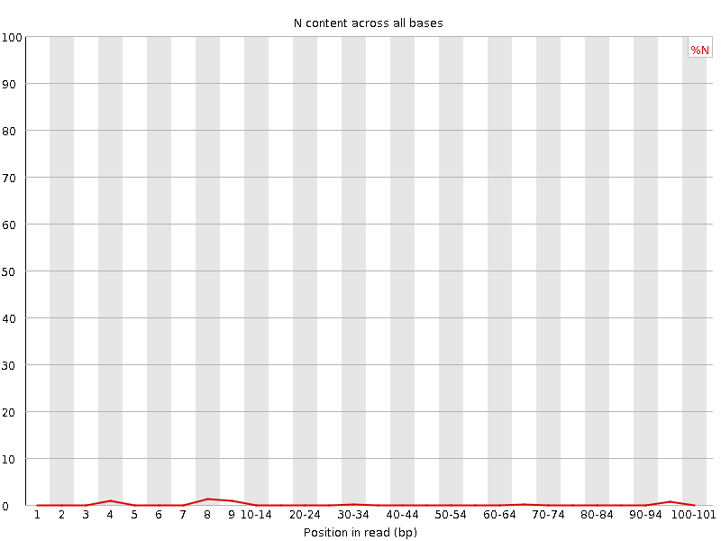
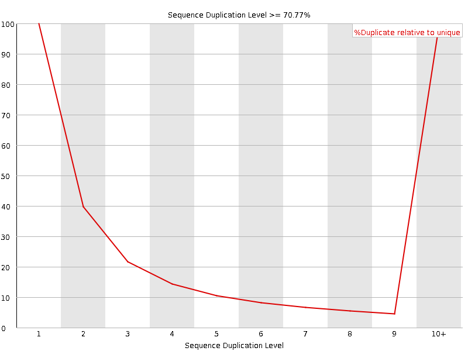

![[OK]](Icons/tick.png) Basic Statistics
Basic Statistics
| Measure | Value |
|---|---|
| Filename | SRR950078__L001_R1_001.fastq |
| File type | Conventional base calls |
| Encoding | Sanger / Illumina 1.9 |
| Total Sequences | 100387010 |
| Filtered Sequences | 0 |
| Sequence length | 101 |
| %GC | 47 |
![[FAIL]](Icons/error.png) Per base sequence quality
Per base sequence quality

Per sequence quality scores

Per base sequence content

Per base GC content

Per sequence GC content

Per base N content

Sequence Length Distribution

Sequence Duplication Levels

![[WARN]](Icons/warning.png) Overrepresented sequences
Overrepresented sequences
| Sequence | Count | Percentage | Possible Source |
|---|---|---|---|
| GATCGGAAGAGCACACGTCTGAACTCCAGTCACATCACGATCTCGTATGC | 343018 | 0.341695603843565 | TruSeq Adapter, Index 1 (100% over 50bp) |
| AGATCGGAAGAGCACACGTCTGAACTCCAGTCACATCACGATCTCGTATG | 195943 | 0.19518760445201028 | TruSeq Adapter, Index 1 (100% over 49bp) |
Kmer Content

| Sequence | Count | Obs/Exp Overall | Obs/Exp Max | Max Obs/Exp Position |
|---|---|---|---|---|
| AAAAA | 49302305 | 3.8893113 | 8.5751095 | 65-69 |
| TTTTT | 42080515 | 3.4168353 | 6.520011 | 2 |
| CTGGG | 18905525 | 2.3932343 | 6.3405685 | 1 |
| GAAGA | 22790390 | 2.2679408 | 5.731483 | 6 |
| GGAAG | 19570810 | 2.187389 | 6.1389523 | 5 |
| CTCCA | 18732935 | 2.1224332 | 5.758368 | 6 |
| TCCAG | 18529460 | 2.0939026 | 6.421607 | 7 |
| CTGGA | 17967435 | 2.0250947 | 5.942541 | 1 |
| GAAAA | 21410830 | 1.8970387 | 5.1601887 | 1 |
| CTCAG | 15776800 | 1.7828411 | 5.038485 | 1 |
| AAAAT | 22436605 | 1.7802054 | 5.1676803 | 3 |
| CTTGG | 14584085 | 1.6532782 | 5.0811596 | 1 |
| AAGAG | 16608705 | 1.6527828 | 5.499945 | 7 |
| GTTTT | 16191735 | 1.4681356 | 5.004289 | 1 |
| GAGCA | 12596975 | 1.4116205 | 7.100777 | 9 |
| AGAGC | 12485410 | 1.3991185 | 6.710242 | 8 |
| ATCCA | 11696705 | 1.1768469 | 5.3939996 | 6 |
| CGGAA | 6772715 | 0.7589523 | 5.3290887 | 4 |
| TCGGA | 5812715 | 0.6551463 | 5.369976 | 3 |
| GATCG | 5429810 | 0.6119894 | 5.215659 | 1 |
| ATCGG | 5261295 | 0.5929962 | 5.186541 | 2 |